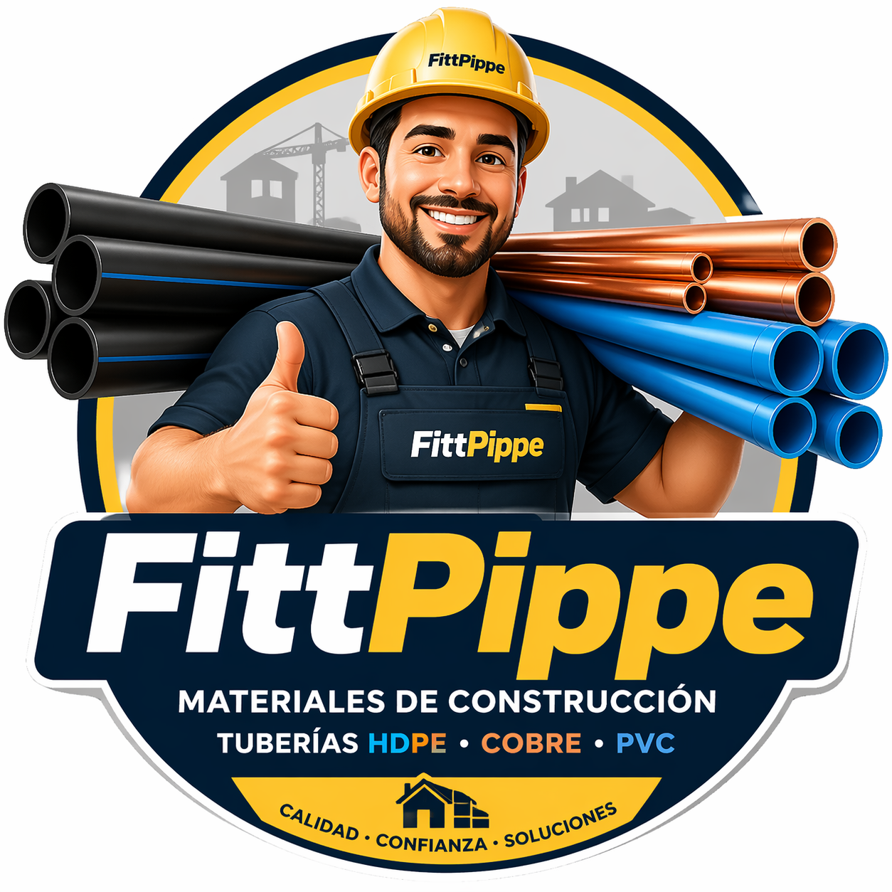
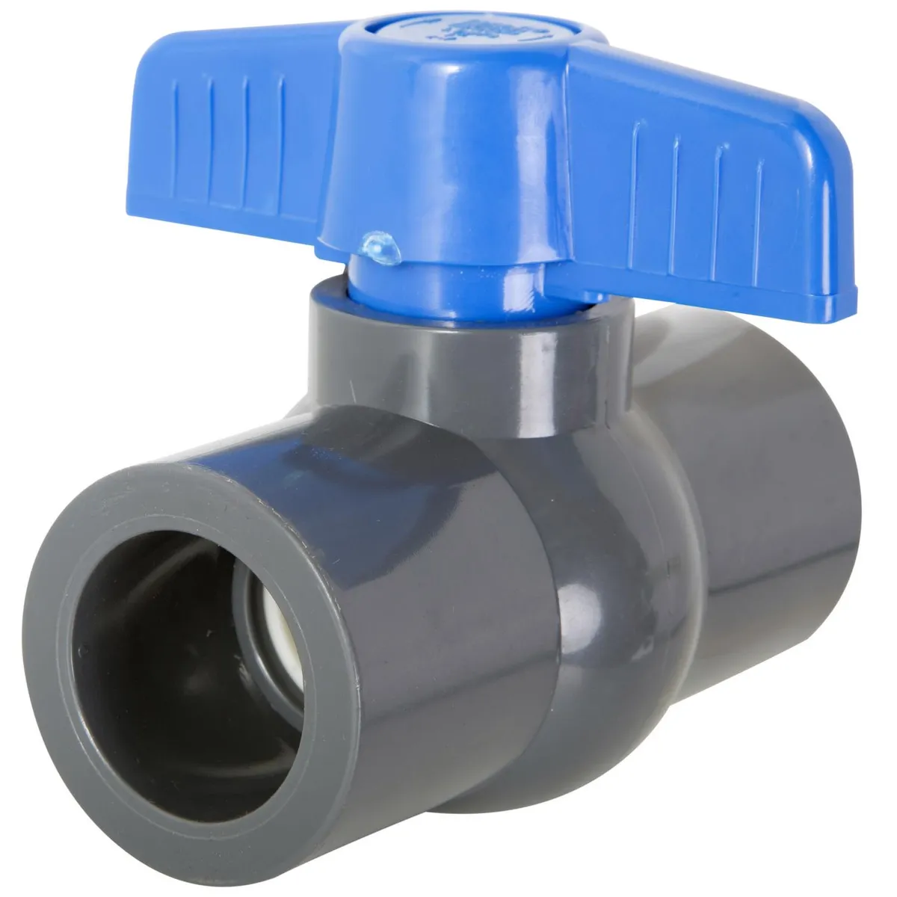

Soluciones rápidas en fittings

| Material | PVC |
| Diámetro | 32 mm |
| Tipo | Válvula de bola |
| Uso | Agua / riego |
| Conexión | Cementar |
| Presión máxima | 10 bar |
| Marca | Genérico |
$4.100
La válvula de bola en PVC de 32 mm es una solución eficiente para controlar el flujo de agua en instalaciones domiciliarias, sistemas de riego y redes hidráulicas.
Su diseño permite una apertura y cierre rápido, asegurando un sellado confiable, resistencia a la corrosión y larga vida útil.